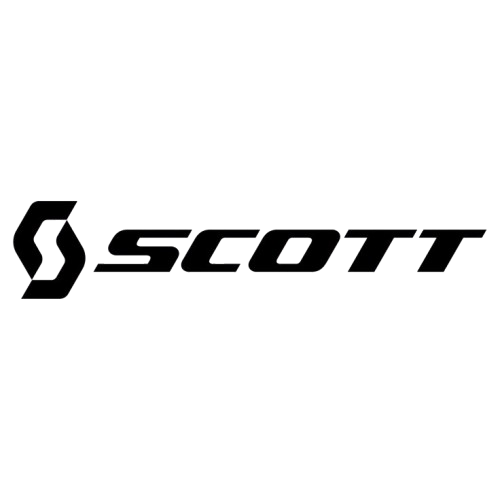
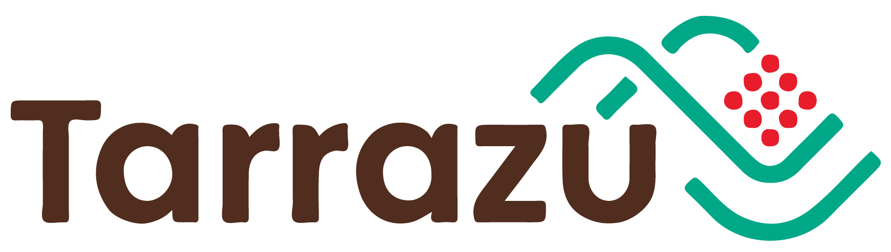
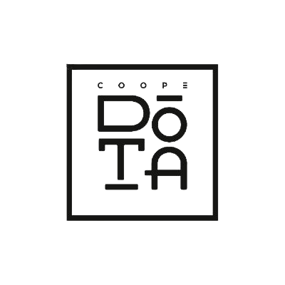
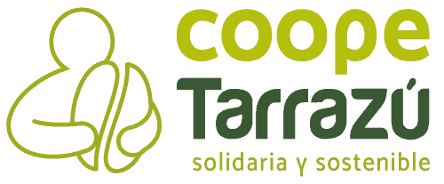
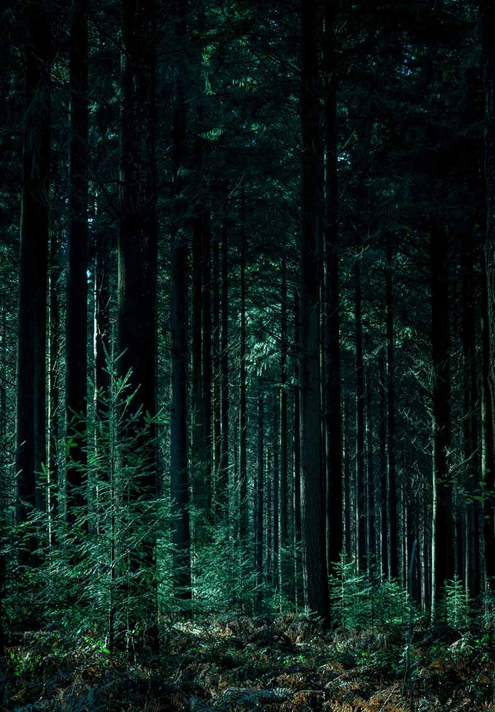
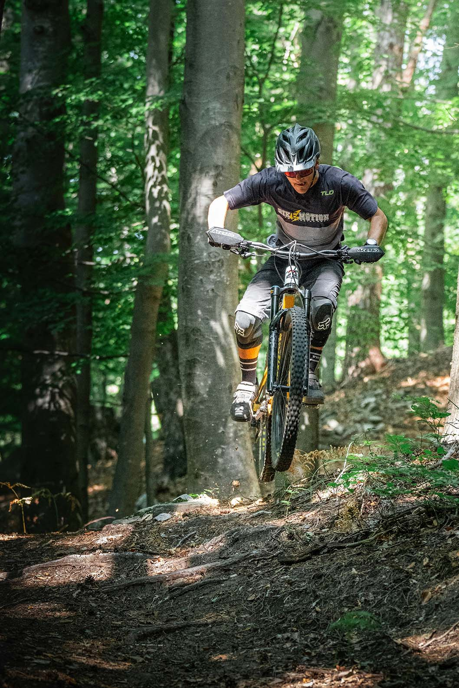
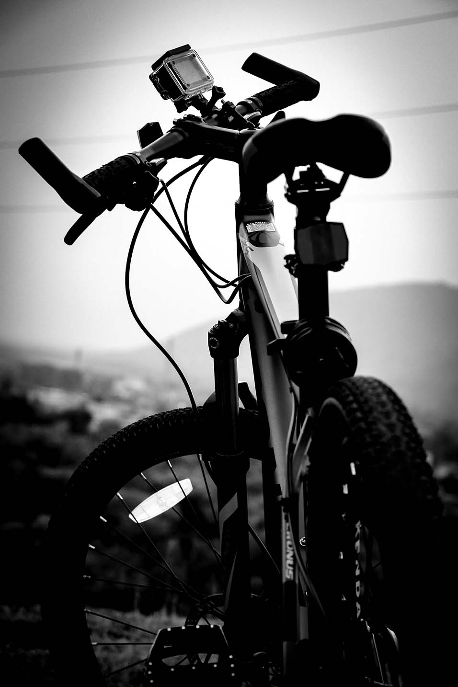
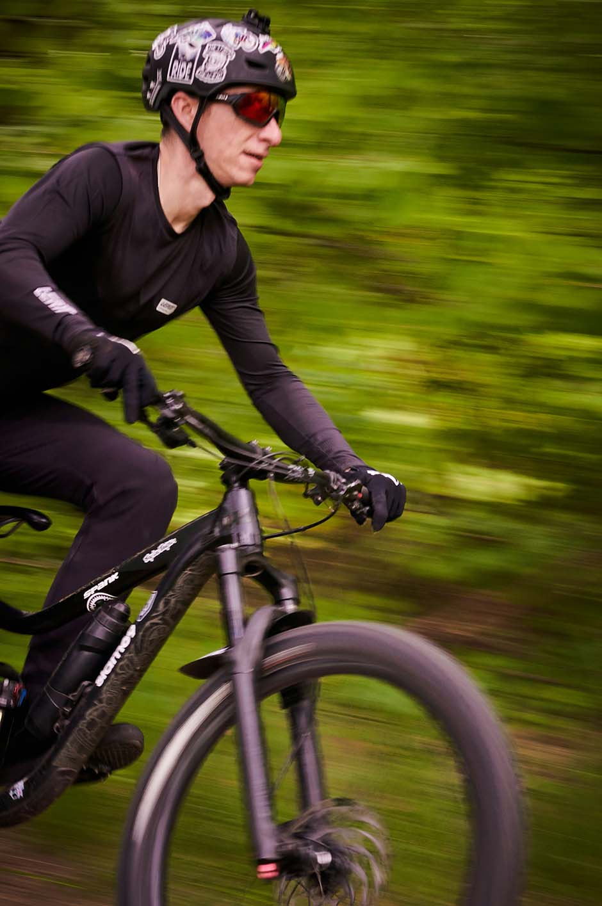

Concepto y Objetivo
Promover la práctica deportiva de alto nivel mientras celebramos el patrimonio ecológico y la tradición del café de especialidad
Promover la práctica deportiva de alto nivel mientras celebramos el patrimonio ecológico y la tradición del café de especialidad
Ciclistas de montaña élite, corredores máster, apasionados del ciclismo recreativo de larga distancia y aventureros en E-Bikes que buscan poner a prueba sus límites físicos
Una inmersión de 3 días con kits técnicos exclusivos, cronometraje electrónico por chip, zonas de asistencia en ruta, premiación en efectivo y actividades comunitarias en cada cantón
Visita micro-beneficios galardonados internacionalmente en Tarrazú y prueba el mejor café del mundo
Explora los bosques nubosos, observa diferentes especies de aves como el Quetzal
Degusta truchas frescas, quesos artesanales y recetas realizadas con café
Alianzas estratégicas con hoteles, cabañas locales con un descuento para competidores
Música en vivo, presentaciones culturales y ambiente familiar durante los 3 días de la competencia
Stands con venta de componentes, accesorios deportivos
Zona gastronómica variada con barras de espresso, bebidas y alimentos







